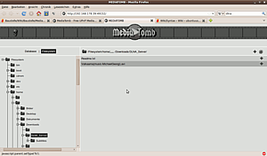

Mediatomb
Dieser Artikel wurde für die folgenden Ubuntu-Versionen getestet:
Ubuntu 16.04 Xenial Xerus
Ubuntu 14.04 Trusty Tahr
Hinweis:
Seit 2013 ruht die Entwicklung von Mediatomb. Ein fork ist Gerbera 
Zum Verständnis dieses Artikels sind folgende Seiten hilfreich:
MediaTomb ist ein freier UPnP-Medienserver (Universal Plug and Play), der es erlaubt, Mediendaten wie Filme und Musik über das Netzwerk an UPnP-fähige Geräte zu verteilen. Dazu zählen auch Geräte, die als DLNA-fähig gekennzeichnet sind. Da in letzter Zeit vermehrt DLNA-fähige Geräte wie Fernseher, Internetradios oder Spielekonsolen (z.B. PS3), auf den Markt kommen, bietet MediaTomb eine komfortable Lösung zur Übertragung von Musik oder Filmen vom Computer auf das jeweilige Gerät.
Installation¶
MediaTomb befindet sich in den offiziellen Paketquellen. Folgende Pakete müssen installiert werden[1]:
mediatomb (universe)
 mit apturl
mit apturl
Paketliste zum Kopieren:
sudo apt-get install mediatomb
sudo aptitude install mediatomb
Einstellungen¶
Die Einstellungen des Servers lassen sich mit einen Editor bearbeiten. Eine Anpassung kann nötig sein, wenn es zu Problemen mit der Verbindung UPnP-Geräten kommt. Dazu muss man mit einem Editor[3] mit Root-Rechten[4] die Datei /etc/mediatomb/config.xml editieren.
Eine genaue Beschreibung der einzelnen Optionen findet man auf der Homepage von MediaTomb .
Bei Ubuntu 16.04 muss die Netzwerkschnittstelle MT_INTERFACE in der Datei /etc/default/mediatomb angepasst werden:
## Network interface on which the server will run, you need to edit this! #MT_INTERFACE="lo" MT_INTERFACE="enp0s25" #or whatever you external interface is
Server starten/stoppen¶
Nach der Installation wird MediaTomb automatisch beim Hochfahren des Computers gestartet.
Hinweis:
Der Server verfügt über einen integrierten Dateisystem-Browser in der Benutzeroberfläche, d.h. jeder, der Zugriff auf die MediaTomb-Weboberfläche hat, kann das Dateisystem durchsuchen (mit Benutzerberechtigungen, unter denen der Server läuft) und auch Daten herunterladen. Falls Sie die maximale Sicherheit wünschen - deaktivieren Sie die Benutzeroberfläche vollständig.
Eine Konto-Authentifizierung bietet zwar einen einfachen Schutz, der z.B. Kinder zurückhalten könnte, aber es ist nicht sicher genug für einen Einsatz in einer nicht vertrauenswürdigen Umgebung.
Da der Server in einer Home-LAN-Umgebung verwendet werden soll, ist die Benutzeroberfläche normalerweise aktiviert und eine Konto-Authentifizierung deaktiviert, so dass jeder in Ihrem Netzwerk eine Verbindung zur Benutzeroberfläche herstellen kann.
Deswegen ist ratsam, den Server nicht permanent sondern nur dann laufen lassen, wenn er tatsächlich benötigt wird. Dafür soll man ihn dauerhaft deaktivieren:
Für Systemen mit dem systemd:
sudo systemctl disable mediatomb.service
Prüfen, ob der Server deaktiviert ist:
systemctl is-enabled mediatomb.service
Falls die Ausgabe "disabled" lautet, ist der Server tatsächlich dauerhaft deaktiviert.
Mann kann auch den Status abfragen:
systemctl status mediatomb.service
Bei deaktivierten Server sieht dann die Status-Ausgabe so aus:
● mediatomb.service - UPnP MediaServer Loaded: loaded (/lib/systemd/system/mediatomb.service; disabled; vendor preset: enabled) Active: inactive (dead)
Mit dem Befehl kann der MediaTomb-Daemon wieder dauerhaft aktiviert werden:
sudo systemctl enable mediatomb.service
Für Systemen mit dem Upstart legt man eine neue /etc/init/mediatomb.override Datei an:
sudo sh -c "echo 'manual' > /etc/init/mediatomb.override"
Möchte man den Init-Job wieder aktivieren, löscht man einfach die /etc/init/mediatomb.override-Datei (oder entfernt das Schlüsselwort "manual" in dieser Datei).
Manuelles Starten kann je nach Ubuntu-Version via systemd / Upstart bzw. das Skript /etc/init/mediatomb.conf erfolgen. Die Steuerung des Dienstes über das SysV-Init Skript /etc/init.d/mediatomb ist zwar möglich, aber inzwischen veraltet:
Server starten:
sudo service mediatomb start
oder
sudo /etc/init.d/mediatomb start
Server stoppen:
sudo service mediatomb stop
oder
sudo /etc/init.d/mediatomb stop
Server neustarten:
sudo service mediatomb restart
oder
sudo /etc/init.d/mediatomb restart
Status abfragen:
sudo service mediatomb status
oder
sudo /etc/init.d/mediatomb status
Dies läßt sich automatisieren, indem die entsprecheden Programmstarter ins Verzeichnis /usr/share/applications/ (systemweit) bzw. ~/.local/share/applications/ (für den lokalen Benutzer) platziert werden:
/usr/share/applications/mediatomb-server-start.desktop
[Desktop Entry] Name=MediaTomb server start Comment=Starts MediaTomb server Exec=sudo systemctl start mediatomb.service Terminal=true Icon=mediatomb.png Type=Application Categories=AudioVideo;
/usr/share/applications/mediatomb-server-stop.desktop
[Desktop Entry] Name=MediaTomb server stop Comment=Stop MediaTomb server Exec=sudo systemctl stop mediatomb.service Terminal=true Icon=mediatomb.png Type=Application Categories=AudioVideo;
Dann läßt sich der MediaTomb-Server über den Menüeintrag "Anwendungen -> Multimedia -> MediaTomb server start" starten und über den Menüeintrag "Anwendungen -> Multimedia -> MediaTomb server stop" stoppen (im aufpoppenden Terminal-Fenster muss noch ein Benutzer-Passwort für den Befehl sudo eingegeben werden).
Bedienung¶
Programmaufruf¶
Nach erfolgreichem Start des Servers kann man das Programm über den Menüpunkt "Anwendungen -> Multimedia -> MediaTomb" aufrufen. Daraufhin startet ein Browser und öffnet die Weboberfläche von MediaTomb. Alternativ erreicht man das auch durch Aufruf der Adresse http://localhost:49152 (der Standard-Port 49152 kann angepasst werden; z.B. 50500 bei Ubuntu 16.04).
Erhält man die Meldung
"MediaTomb UI is disabled. Check your configuration."
muss in der Datei /etc/mediatomb/config.xml der Eintrag ui enabled="no" auf "yes" gesetzt werden. In den Zeilen darunter lässt sich festlegen, ob der Zugang nur per Benutzernamen und Passwort möglich sein soll. Dazu wird "accounts enabled" auf "yes" gesetzt und bei "user" und "password" entsprechend ein Benutzername und ein Passwort eingesetzt.
Dem Menüeintrag "Anwendungen -> Multimedia -> MediaTomb" entspricht der Programmstarter /usr/share/applications/mediatomb.desktop:
[Desktop Entry] Name=MediaTomb Comment=MediaTomb UPnP MediaServer web user interface. Exec=/usr/bin/x-www-browser /var/lib/mediatomb/mediatomb.html Icon=mediatomb.png Terminal=false Type=Application Categories=AudioVideo;
Der Link /usr/bin/x-www-browser zeigt auf einen Browser (standardmäßig auf den Firefox). Möchte man einen anderen Browser für die MediaTomb-Benutzeroberfläche nutzen, korrigiert man die Exec-Zeile des systemweiten Programmstarter /usr/share/applications/mediatomb.desktop (kann aber bei einem Update überschrieben werden) oder legt einen lokalen Programmstarter ~/.local/share/applications/mediatomb.desktop an:
| Benutzeroberfläche von MediaTomb |
[Desktop Entry] Name=MediaTomb Comment=MediaTomb UPnP MediaServer web user interface Exec=chromium-browser --incognito /var/lib/mediatomb/mediatomb.html Icon=mediatomb.png Terminal=false Type=Application Categories=AudioVideo;
Die Oberfläche ist in 3 Bereiche aufgeteilt. Links oben kann man zwischen den Anzeigemodi "Database" und "Filesystem" wechseln. Links unten findet man eine Verzeichnisstruktur in Baumdarstellung. Der große Bereich rechts beinhaltet die jeweiligen Inhalte und die Schaltflächen zur Interaktion mit dem Programm.
Anzeigemodus Database¶
| Anzeigemodus Database |
In diesem Modus werden alle freigegebenen Objekte angezeigt. Auf diese kann nun mit einem UPnP-fähigen Gerät über das Netzwerk zugegriffen werden.
Zur Interaktion mit dem Programm stehen verschiedene Schaltflächen zur Verfügung. Die wichtigsten sind:
"Add item": Fügt ein neues Objekt hinzu
"Edit": Mit dieser Schaltfläche können verschiedene Informationen des Objekts bearbeitet werden.
"Remove": Deaktiviert die Freigabe des jeweiligen Objekts und entfernt es aus der Datenbank.
"Remove all": Entfernt das Objekt und alle Referenzen aus der Datenbank
Anzeigemodus Filesystem¶
|  |
| Anzeigemodus Filesystem |
Dieser Modus zeigt das Dateisystem des verwendeten Computers an. Über die Baumstruktur kann man zu den Objekten navigieren, die freigegeben werden sollen. Dabei können sowohl einzelne Dateien oder auch ganze Ordner freigegeben werden. Für die Ordnerfreigabe besteht zusätzlich die Möglichkeit, eine automatische Aktualisierung des Inhalts zu aktivieren (autoscan). Dadurch wird der Inhalt des betroffenen Ordners innerhalb eines frei definierbaren Zeitintervalls auf Veränderungen überprüft.
Folgende Schaltflächen stehen zur Verfügung:
"Add": Fügt eine Datei oder einen Ordner der Datenbank hinzu und gibt sie frei.
"Add as autoscan dir": Fügt einen Ordner der Datenbank hinzu und aktiviert die automatische Aktualisierung.
Problembehebung¶
OpenVPN¶
Unter Umständen kann es zu Problemen kommen, wenn Mediatomb und OpenVPN gleichzeitig installiert sind. Das Problem äußert sich darin, dass die Weboberfläche von Mediatomb zwar erreichbar ist, der eigentliche UPNP-Service aber nicht. Die Ursache ist hierfür, dass Mediatomb den UPNP-Service scheinbar an die Netzwerkschnittstelle tun0, welche von OpenVPN angelegt wird, bindet. Stattdessen soll Mediatomb sich an die übliche Netzwerkschnittstelle binden, normalerweise also eth0 oder wlan0. Ein einfacher Eingriff in der Datei /etc/default/mediatomb löst das Problem:
... # The network interface for MediaTomb to bind to and for which the multicast # routing entry should be added; "" if the route shouldn't be added at all. # For example: INTERFACE="eth0" INTERFACE="eth0" ...
Firewall¶
Netzwerkgeräte machen ihren UPnP-Dienst via UDP über die Multicast-Adresse 239.255.255.250:1900 auf Basis des Simple Service Discovery Protocol (SSDP) bekannt. Von daher muss sichergestellt werden, dass die Firewall den UDP-Port 1900 nicht blockiert. Außerdem wird MediaTomb standardmäßig für die Kommunikation einen freien Port wählen (ab 49152).
Die Ports für MediaTomb können bei Verwendung von ufw auf folgende Weise zugelassen werden:
sudo ufw allow 1900/udp sudo ufw allow 49152/tcp sudo ufw allow 49152/udp
Unabhängig davon, ob eine Firewall benutzt wird oder nicht, kann es sinnvoll sein, einen Zugang zur MediaTomb-Steuerung von anderen Rechnern im LAN zu verbieten. Ansonsten kann man das lokale Dateisystem via MediaTomb-GUI durchstöbern (http://SERVER-IP:49152). Man kann auch die Media-Dateien nur auf den bestimmten Netzwerkgeräten abspielen zu lassen.
Hier ist ein Beispiel, wie sich solche Logik auf der Basis vom IP-Paketfilter iptables implementieren läßt.
Beispiel-IP-Adressen:
192.168.0.111- ein PC, auf dem MediaTomb läuft192.168.0.100- ein DLNA-Netzwerkgerät, z. B. ein Fernseher (oder ein PC, auf dem VLC läuft), das die Media-Dateien bekommen darf.
Regeln für die Datei /etc/iptables.rules:
*filter -A INPUT -s 192.168.0.111/32 -p tcp -m tcp --dport 49152 -j ACCEPT -A INPUT -s 192.168.0.111/32 -p udp -m udp --dport 49152 -j ACCEPT -A INPUT -s 192.168.0.100/32 -p tcp -m tcp --dport 49152 -j ACCEPT -A INPUT -s 192.168.0.100/32 -p udp -m udp --dport 49152 -j ACCEPT -A INPUT ! -s 127.0.0.1/32 -p tcp -m tcp --dport 49152 -j DROP -A INPUT ! -s 127.0.0.1/32 -p udp -m udp --dport 49152 -j DROP -A OUTPUT ! -d 239.255.255.250 -p udp -m udp --dport 1900 -j DROP COMMIT
Die ensprechenden iptables-Regel kann man bei einem MediaTomb-Start aus dem Upstart Skript /etc/init/mediatomb.conf aktivieren bzw. bei einem MediaTomb-Stop deaktivieren lassen:
1 2 3 4 5 6 7 8 9 10 11 12 13 14 15 16 17 18 19 20 21 22 23 24 25 26 27 28 29 30 31 32 33 34 35 36 37 38 39 40 41 42 43 44 45 46 47 48 49 50 51 52 53 54 55 56 57 58 59 | description "MediaTomb UPnP media server" author "Daniel van Vugt <vanvugt in launchpad>" start on (local-filesystems and net-device-up IFACE!=lo) stop on runlevel [!2345] respawn env CONFIGXML=/etc/mediatomb/config.xml env LOGFILE=/var/log/mediatomb.log env DEFAULT=/etc/default/mediatomb # need for a firewall logging in the /var/log/syslog env LOGGER="/usr/bin/logger -s -p daemon.info -t FirewallHandler" #-------------- script [ -r $DEFAULT ] && . $DEFAULT [ ! $USER ] && USER=root [ ! $GROUP ] && GROUP=$USER if [ -n "$INTERFACE" ]; then INTERFACE_ARG="-e $INTERFACE" $ROUTE_ADD $INTERFACE fi # insert a mediatomb firewall rules if [ ! -r /etc/iptables.rules ]; then ${LOGGER} "No iptables rules exist to restore." elif [ ! -x /sbin/iptables-restore ]; then ${LOGGER} "No program exists to restore iptables rules." else ${LOGGER} "Restoring a mediatomb iptables rules" /sbin/iptables-restore < /etc/iptables.rules fi #------------------------------------- exec mediatomb \ -c $CONFIGXML \ -u $USER \ -g $GROUP \ -l $LOGFILE \ $INTERFACE_ARG \ $OPTIONS end script post-stop script [ -r $DEFAULT ] && . $DEFAULT if [ -n "$INTERFACE" ]; then $ROUTE_DEL $INTERFACE fi # remove a mediatomb firewall rules if [ -x /sbin/iptables-save ]; then ${LOGGER} "Remove a mediatomb iptables rules" /sbin/iptables-save | egrep -v "49152|1900" | /sbin/iptables-restore else ${LOGGER} "No program exists to save iptables rules." fi #---------------- end script |
Darstellung von Umlauten¶
Dieses Problem resultiert daher, dass standardmäßig kein erweiterter Zeichensatz spezifiziert ist. Das kann man durch folgende Schritte beheben.
Falls MediaTomb gerade läuft, sollte der Server zunächst gestoppt werden. Anschließend muss man mit einem Editor[3] mit Root-Rechten[4] die Datei /etc/mediatomb/config.xml editieren. Nun sucht man sich folgende Zeile heraus:
<import hidden-files="no">
Unterhalb dieser Zeile, fügt man folgende zwei xml-Knoten ein:
<filesystem-charset>UTF-8</filesystem-charset> <metadata-charset>UTF-8</metadata-charset>
Nach dem Speichern der Datei und dem Start von MediaTomb, müssen die betreffenden Dateien einmal neu eingelesen werden. Dazu werden diese aus der Freigabeliste entfernt und neu hinzugefügt. Jetzt sollten die Umlaute korrekt dargestellt werden.
Fehlermeldungen bezüglich der Datenbank¶
Es kann von Zeit zu Zeit vorkommen, dass die Datenbank-Datei fehlerhaft ist. Das macht sich z.B. durch Fehlermeldungen wie diese bemerkbar:
"error: database disk image is malformed"
Um dieses Problem zu beheben, muss MediaTomb gestoppt und die fehlerhafte Datenbank gelöscht werden:
sudo rm /var/lib/mediatomb/mediatomb.db
Bei dem nächsten Start wird automatisch eine neue Datei angelegt. Zu beachten ist allerdings, dass auch sämtliche Freigaben neu angelegt werden müssen.
DLNA TVs (z.B. Samsung)¶
Einige Fernsehgeräte brauchen einen speziellen Abschnitt in der Datei /etc/mediatomb/config.xml, um die Inhalte vom Media-Server wiedergeben zu können:
1 2 3 4 5 6 7 | <protocolInfo extend="yes"/><!-- For PS3 support change to "yes" --> <custom-http-headers> <!-- Samsung needs it --> <add header="transferMode.dlna.org: Streaming"/> <add header="contentFeatures.dlna.org: DLNA.ORG_OP=01;DLNA.ORG_CI=0;DLNA.ORG_FLAGS=01500000000000000000000000000000"/> </custom-http-headers> |
Links¶
Intern¶
Andere DLNA-Server (Auswahl):
ReadyMedia (früher miniDLNA)
Musik verwalten
 weitere Möglichkeiten, um einen Medienserver aufzubauen
weitere Möglichkeiten, um einen Medienserver aufzubauenGUPnP Tools - ein Werkzeug, mit dem man verschiedene Informationen über den Status von UPnP-Geräten abrufen kann
Extern¶
Anleitung für Mediatomb und PS3
 - Blogbeitrag, 11/2009
- Blogbeitrag, 11/2009Allgemeine Information in der Wikipedia:
PS 3 Media Server
- alternativer DLNA-Media-Server
- Erstellt mit Inyoka
-
 2004 – 2017 ubuntuusers.de • Einige Rechte vorbehalten
2004 – 2017 ubuntuusers.de • Einige Rechte vorbehalten
Lizenz • Kontakt • Datenschutz • Impressum • Serverstatus -
Serverhousing gespendet von